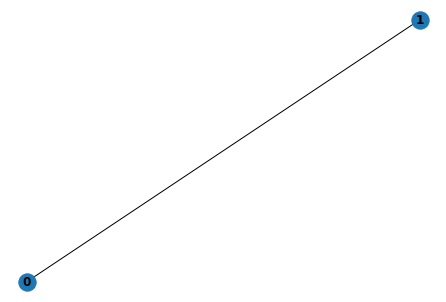
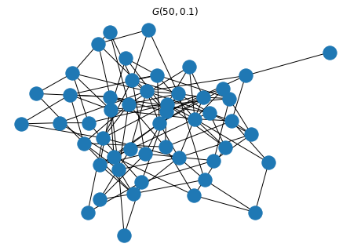
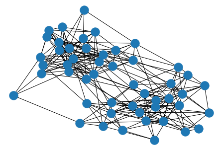
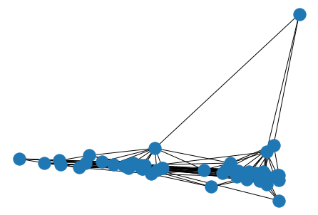
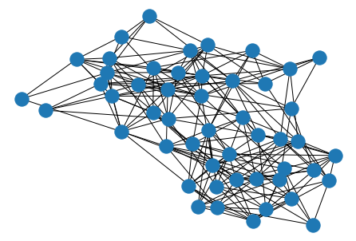
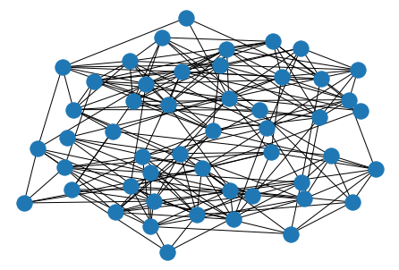
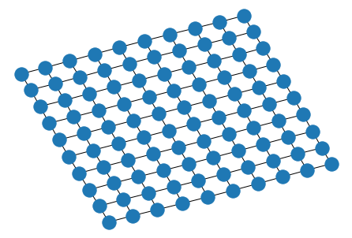
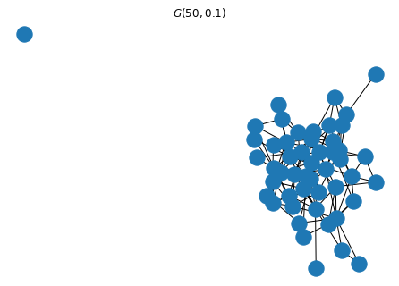

NetworkX¶
%pylab inline
import networkx as nx
Populating the interactive namespace from numpy and matplotlib
This section will cover the NetworkX package. You can find additional information in the NetworkX documentation, which includes a tutorial.
G = nx.Graph()
# add nodes
G.add_node(0)
G.add_node(1)
G.add_nodes_from(range(2)) # adds nodes 0, 1
# add edge from node 0 to node 1
G.add_edge(0,1)
# draws the graph to pyplot axes
nx.draw(G, with_labels=True, font_weight='bold')
plt.show()

Generating Graphs¶
NetworkX provides Graph generators to
Random Graphs¶
Erdos-Renyi Graphs¶
An Erdos-Renyi random graph \(G_{n,p}\) is a graph on \(n\) nodes, where the probability of an edge \((i,j)\) existing is \(p\). In NetworkX, this is called a gnp graph.
n = 50
p = 5 / n # expected number of edges
G = nx.gnp_random_graph(n, p)
nx.draw(G, with_labels=False)
plt.title(r'$G({},{})$'.format(n,p))
plt.show()

Stochastic Block Models¶
ns = [25, 25]
ps = [[0.3, 0.05], [0.05, 0.3]]
G = nx.stochastic_block_model(ns, ps)
nx.draw(G, with_labels=False)
plt.show()

Visualization¶
Visualizing graphs is often a great way to see and understand information.
Unless there is some “ground truth” way to lay out nodes (meaning each node has an associated coordinate), we must choose some way to place nodes in our visualization. There are a variety of methods for this.
Layouts¶
nx.draw_spectral(G)
plt.show()

nx.draw_spring(G)
plt.show()

nx.draw_kamada_kawai(G)
plt.show()

Algorithms¶
Shortest Paths¶
G = nx.grid_2d_graph(10,10)
pos = nx.kamada_kawai_layout(G)
nx.draw(G, pos)

p = nx.shortest_path(G, (0,0), (9,9))
elist = [[p[i], p[i+1]] for i in range(len(p)-1)]
nx.draw(G, pos)
nx.draw_networkx_edges(G, pos, elist, edge_color='r')
plt.show()

Shortest Paths¶
You can compute shortest path lengths in a graph using
dists = nx.shortest_path_length(G)
This creates an iterator over shortest path lengths for each node
next(dists)
((0, 0),
{(0, 0): 0,
(1, 0): 1,
(0, 1): 1,
(2, 0): 2,
(1, 1): 2,
(0, 2): 2,
(3, 0): 3,
(2, 1): 3,
(1, 2): 3,
(0, 3): 3,
(4, 0): 4,
(3, 1): 4,
(2, 2): 4,
(1, 3): 4,
(0, 4): 4,
(5, 0): 5,
(4, 1): 5,
(3, 2): 5,
(2, 3): 5,
(1, 4): 5,
(0, 5): 5,
(6, 0): 6,
(5, 1): 6,
(4, 2): 6,
(3, 3): 6,
(2, 4): 6,
(1, 5): 6,
(0, 6): 6,
(7, 0): 7,
(6, 1): 7,
(5, 2): 7,
(4, 3): 7,
(3, 4): 7,
(2, 5): 7,
(1, 6): 7,
(0, 7): 7,
(8, 0): 8,
(7, 1): 8,
(6, 2): 8,
(5, 3): 8,
(4, 4): 8,
(3, 5): 8,
(2, 6): 8,
(1, 7): 8,
(0, 8): 8,
(9, 0): 9,
(8, 1): 9,
(7, 2): 9,
(6, 3): 9,
(5, 4): 9,
(4, 5): 9,
(3, 6): 9,
(2, 7): 9,
(1, 8): 9,
(0, 9): 9,
(9, 1): 10,
(8, 2): 10,
(7, 3): 10,
(6, 4): 10,
(5, 5): 10,
(4, 6): 10,
(3, 7): 10,
(2, 8): 10,
(1, 9): 10,
(9, 2): 11,
(8, 3): 11,
(7, 4): 11,
(6, 5): 11,
(5, 6): 11,
(4, 7): 11,
(3, 8): 11,
(2, 9): 11,
(9, 3): 12,
(8, 4): 12,
(7, 5): 12,
(6, 6): 12,
(5, 7): 12,
(4, 8): 12,
(3, 9): 12,
(9, 4): 13,
(8, 5): 13,
(7, 6): 13,
(6, 7): 13,
(5, 8): 13,
(4, 9): 13,
(9, 5): 14,
(8, 6): 14,
(7, 7): 14,
(6, 8): 14,
(5, 9): 14,
(9, 6): 15,
(8, 7): 15,
(7, 8): 15,
(6, 9): 15,
(9, 7): 16,
(8, 8): 16,
(7, 9): 16,
(9, 8): 17,
(8, 9): 17,
(9, 9): 18})